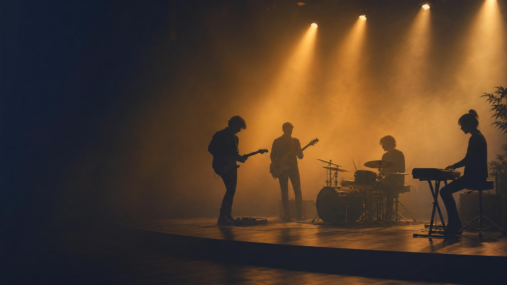
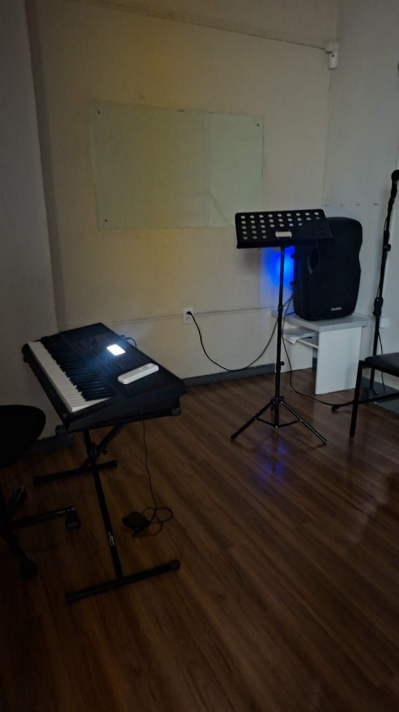

MMusiartes
Reunião com professores • online • 21h20
Reunião com professores
Reajuste, contratos, conduta e organização da rotina
Alinhamento dos novos valores, atualização dos contratos, uso das ferramentas e cuidado com a estrutura da escola.
OnlineHoje • 21h20Musiartes

Imagem de apoio: prática musical e experiência de aula.
1. Objetivo da reunião
Alinhar uma nova etapa com transparência
A ideia é apresentar as atualizações de remuneração, contrato de serviço, manual de conduta e alguns pontos importantes da rotina da escola.
01Remuneração
Novos valores para Flex, Triflex e Vip.
02Contratos
Atualização do contrato de serviço e manual de conduta.
03Rotina
Ferramentas, agenda, materiais, salas e organização.
2. Reajuste de remuneração
Novos valores
A partir da atualização, os valores passam a ser organizados por modalidade de atendimento.
R$ 17,50Flex
Novo valor de remuneração para aulas do plano Flex.
R$ 17,50Triflex
Novo valor de remuneração para aulas do plano Triflex.
R$ 30,00Vip
Novo valor de remuneração para aulas Vip.
Ponto de fala
Explicar o motivo do reajuste, quando começa a valer e como isso será refletido nos pagamentos.
3. Reajuste anual
Critério para os próximos reajustes
Para dar previsibilidade, os reajustes de remuneração dos professores serão revisados anualmente.
- Periodicidade: revisão anual dos valores.
- Parâmetro: o reajuste terá como referência o reajuste aplicado aos alunos no período de renovação.
- Objetivo: manter uma regra clara, previsível e conectada à realidade financeira da escola.
4. Contrato e manual de conduta
Atualização dos combinados de trabalho
Além dos novos valores, o contrato de serviço e o manual de conduta serão atualizados para deixar as regras mais claras para todos.
- Remuneração para reuniões: reuniões convocadas pela escola terão pagamento de R$ 20,00.
- Desmarcação de aulas: alteração do prazo para 1 semana de antecedência.
- Planejamento: o pagamento de planejamento ficará ligado ao comparecimento nas reuniões.
5. Musiweb para professores
Números e solicitações de forma mais prática
Em breve, o Musiweb estará disponível para os professores com informações importantes da escola de maneira simples e acessível.
Indicadores
Número de alunos, novas matrículas, cancelamentos, desistências e aulas experimentais.
Solicitações
Pedido de manutenção, solicitação de materiais, contrato de serviço e manual de conduta.
Objetivo
Dar mais clareza para os professores e facilitar a comunicação com a coordenação.
6. Visual do Musiweb
Centralizar pedidos e informações
A ferramenta também vai ajudar a registrar solicitações de manutenção e materiais de forma organizada.

Exemplo de tela do Musiweb para solicitação de manutenção.
7. Emusys
Agenda, valores e experimentais
O Emusys segue sendo a ferramenta de referência para acompanhamento da rotina operacional dos professores.
- Agenda: acompanhamento dos horários, aulas e organização semanal.
- Valores: conferência das informações relacionadas à remuneração.
- Experimentais: registro e acompanhamento das aulas experimentais.
8. Cuidado com materiais e salas
Organização também faz parte da experiência da escola
Precisamos reforçar o cuidado coletivo com os materiais, equipamentos e salas de aula. Isso impacta diretamente a qualidade das aulas e a imagem da escola.
Materiais
Pedestais, microfones, cabos, instrumentos e acessórios precisam ser usados e guardados com cuidado.
Equipamentos
Evitar deixar luzes e equipamentos ligados após o uso das salas.
Ambiente
Manter salas limpas, organizadas e prontas para o próximo professor e aluno.
9. Exemplos recentes
O cuidado precisa ser de todos
Algumas situações recentes mostram a importância de termos mais atenção com o uso e a organização dos materiais.

Material/equipamento deixado sem organização adequada.

Cabos e instrumentos expostos, prejudicando a organização da sala.
Ponto de fala
Tom firme, mas não acusatório: o objetivo é criar responsabilidade coletiva e preservar a estrutura da escola.
10. Próximos passos
Como seguimos depois da reunião
- 1. Apresentar os novos valores e explicar quando começam a valer.
- 2. Enviar contrato e manual de conduta para leitura e formalização.
- 3. Orientar o uso do Musiweb quando estiver disponível aos professores.
- 4. Reforçar o uso correto do Emusys para agenda, valores e experimentais.
- 5. Alinhar cuidado com salas e materiais como regra permanente da rotina.
Fechamento
Mensagem principal
Quero que a equipe tenha clareza sobre valores, regras, ferramentas e responsabilidades. Quanto mais alinhada a nossa rotina, melhor fica o trabalho para professores, alunos e escola.
Tom da conversa
Transparência, organização e parceria — mas com responsabilidade sobre combinados, prazos e cuidado com a estrutura da escola.